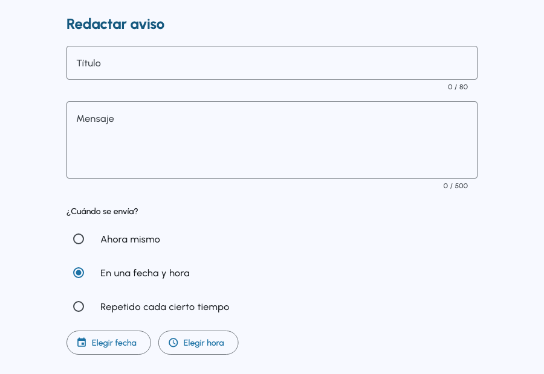
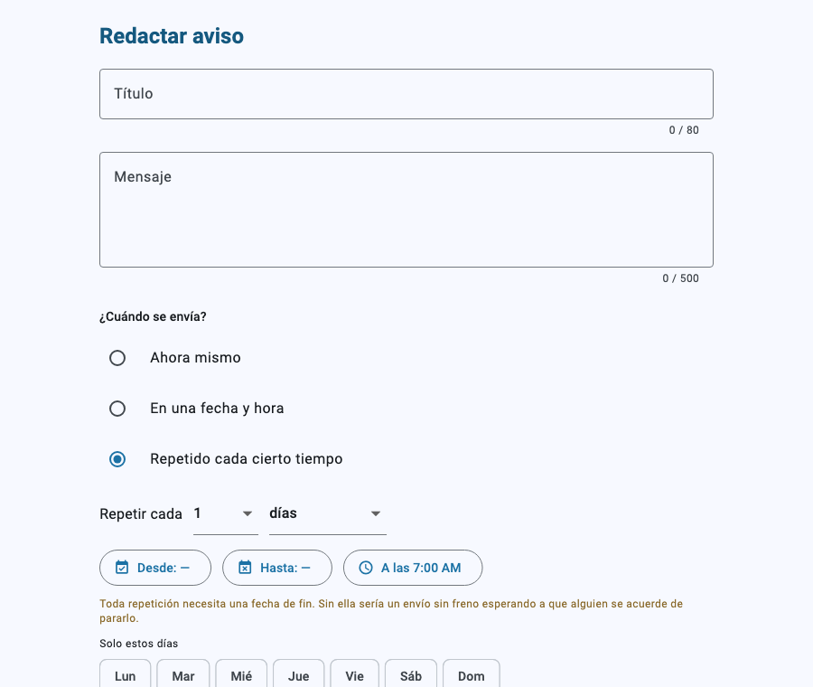
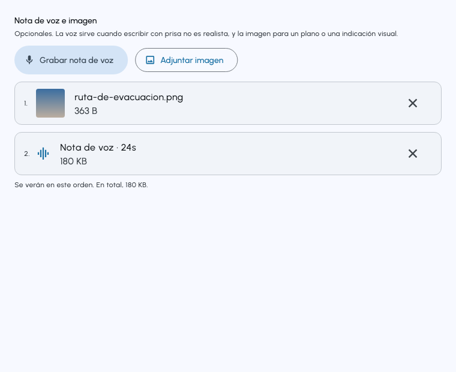
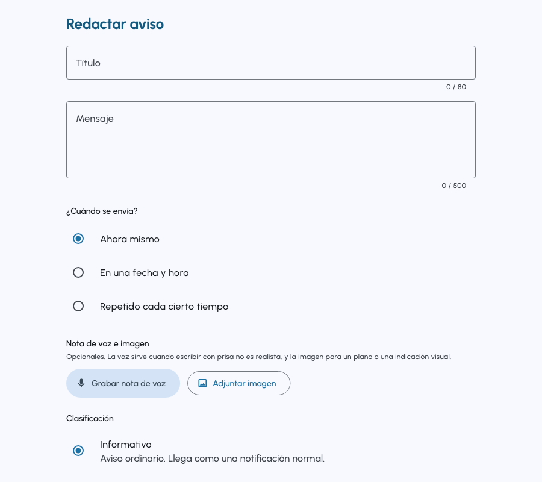
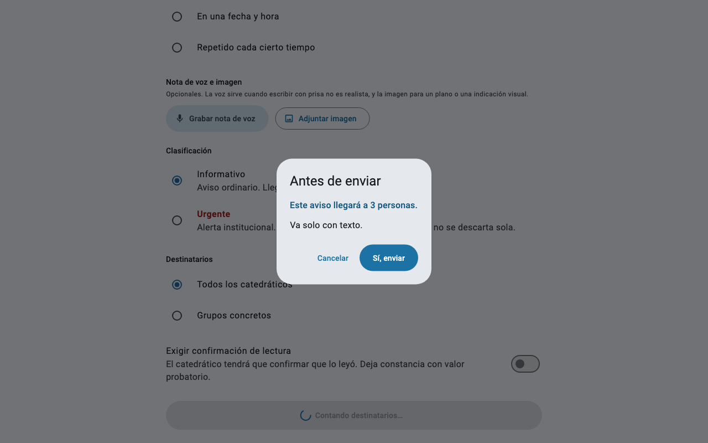
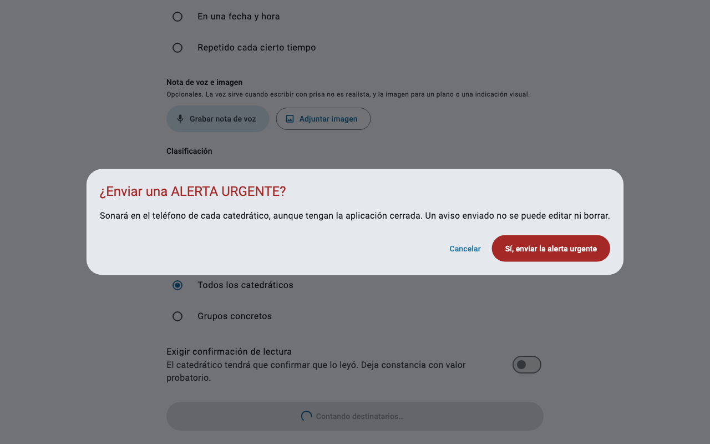
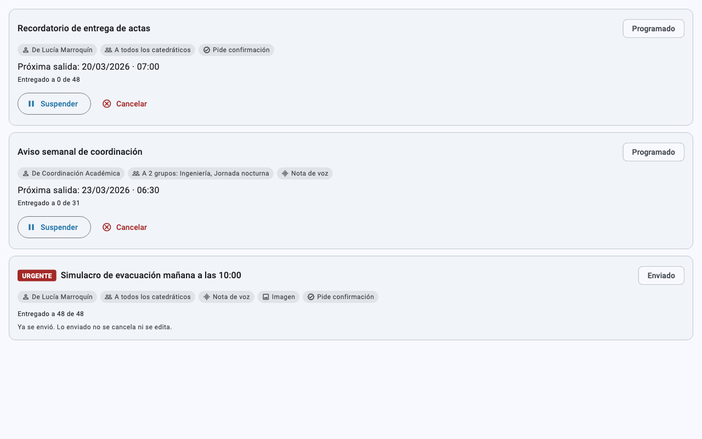
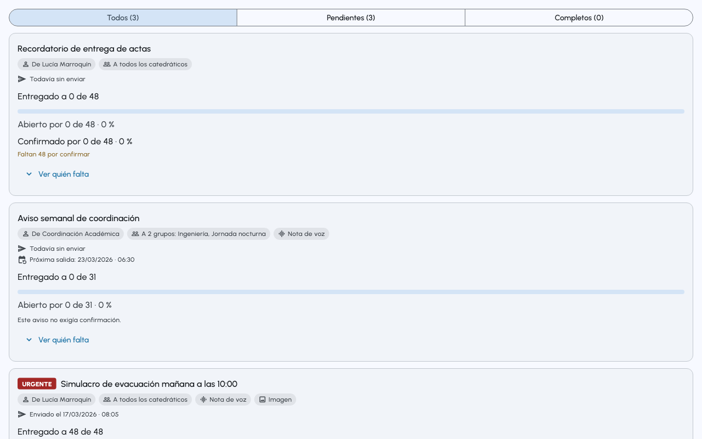
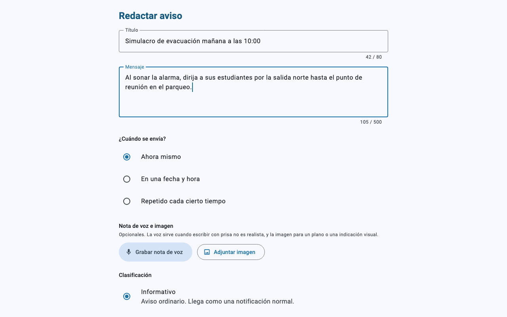

Empiece aquí
Tres pasos. Diez minutos la primera vez, y ya no se vuelve a hacer.
- Entre a SIAN. Abra
sian-umg-bdm-dev.web.appy use Entrar con Google con su correo de la universidad. Ver cómo entrar - Instale la aplicación en su celular. En iPhone es obligatorio: sin ese paso no le llega ninguna alerta. iPhone · Android
- Active las notificaciones. Acepte el permiso que le pide el celular. Le llegará un aviso de prueba. Ver cómo
Qué es SIAN
Sistema Institucional de Avisos y Notificaciones.
SIAN sirve para que un aviso de la coordinación académica llegue al teléfono de un catedrático aunque no tenga la aplicación abierta. Un correo se lee cuando alguien decide revisarlo. Una alerta de evacuación tiene que sonar en el momento.
No se descarga de ninguna tienda. Se abre desde el navegador, en esta dirección:
https://sian-umg-bdm-dev.web.app
Los dos tipos de aviso
| Tipo | Cómo se ve | Qué significa |
|---|---|---|
| Informativo | Sin marca especial | Información que conviene conocer. Llega como cualquier notificación. |
| Urgente | Etiqueta roja URGENTE | Requiere atención inmediata. Suena distinto, vibra más y el mensaje se abre solo en la bandeja. |
Algunos avisos, además, piden que confirmes que los leíste. Eso deja constancia de quién estaba enterado, que es lo que después permite responder a la pregunta «¿quién sabía del simulacro?».
Cómo entrar
Igual en todos los dispositivos.
Abra sian-umg-bdm-dev.web.app
y verá la pantalla de inicio de sesión. Hay dos formas de entrar.


Opción 1 · Entrar con Google (recomendada)
- Presione Entrar con Google.
- Elija su cuenta institucional en la lista que aparece.
- Listo. No tiene que inventar ni recordar otra contraseña.
Opción 2 · Correo y contraseña
- Escriba su correo institucional y su contraseña.
- Presione Entrar.
Si todavía no tiene contraseña, use ¿No tienes cuenta? Regístrate y créela. La contraseña necesita al menos 10 caracteres, con mayúscula, minúscula y un número.
Si olvidó su contraseña
Presione ¿Olvidaste tu contraseña? y escriba su correo. Recibirá un enlace para restablecerla.
Si el sistema no lo deja entrar
| Lo que dice | Qué hacer |
|---|---|
| Acceso no autorizado | Su correo no está en la lista. Pida a la coordinación académica que lo registre. |
| Cuenta desactivada | Su cuenta existe pero fue desactivada. Su historial se conserva completo; contacte a la coordinación para reactivarla. |
| Sesión sin rol asignado | Cierre sesión y vuelva a entrar. El rol se asigna aparte, y su sesión pudo haberse creado antes de que se lo asignaran. |
Instalar en iPhone y iPad
- Abra
sian-umg-bdm-dev.web.appen Safari. Chrome y Firefox en iPhone no pueden hacer esto. - Presione el botón Compartir: el cuadrado con una flecha hacia arriba, abajo en el centro de la pantalla.
- Desliza hacia abajo en el menú y elige Añadir a pantalla de inicio.
- Presione Añadir, arriba a la derecha.
- Cierre Safari y abra SIAN desde el ícono nuevo de su pantalla de inicio. De ahí en adelante, entre siempre por ese ícono.
Versión de iOS
Las notificaciones web necesitan iOS 16.4 o superior. Puede revisarla en Ajustes → General → Información → Versión del software. Con una versión anterior podrá leer los mensajes dentro de la aplicación, pero el celular no le avisará.
La aplicación muestra estos pasos
Si entras desde un iPhone sin haberla instalado, SIAN muestra estos mismos pasos antes que nada:

Instalar en Android
- Abra
sian-umg-bdm-dev.web.appen Chrome. - Chrome mostrará abajo un aviso de Instalar aplicación.
Presiónelo.
Si no aparece: menú ⋮ (arriba a la derecha) → Añadir a pantalla principal o Instalar aplicación. - Confirma con Instalar.
- El ícono queda en su pantalla de inicio, junto a las demás aplicaciones.
Instalada, SIAN abre a pantalla completa y sin barra de direcciones, y las notificaciones se comportan igual que las de cualquier otra aplicación.
Instalar en computadora
En computadora tampoco es obligatorio: SIAN funciona en una pestaña normal, notificaciones incluidas. Instalarla evita tener que buscar la pestaña entre otras veinte.
- Abra
sian-umg-bdm-dev.web.appen Chrome o Edge. - En la barra de direcciones, a la derecha, aparece un icono de
instalar (una pantalla con una flecha hacia abajo).
Presiónelo.
También desde el menú ⋮ → Enviar, guardar y compartir → Instalar página como aplicación. - Confirma con Instalar. Se abre en su propia ventana.
Activar las notificaciones
Sin este permiso, el dispositivo no avisará de nada.
La primera vez que entra, arriba de sus mensajes aparece una tarjeta Activa las notificaciones. Presiónela y acepte el permiso que pide el navegador. Le llegará una notificación de prueba: si llega, todo está bien.
Qué hacer según lo que diga
| Mensaje | Significado y solución |
|---|---|
| Notificaciones activas | Todo correcto. No hay nada que hacer. |
| Activa las notificaciones | Todavía no ha dado el permiso. Presione el botón y acéptelo. |
| Notificaciones bloqueadas | El permiso fue denegado. La misma tarjeta le indica dónde cambiarlo en su navegador; después recargue la página. |
| Ábrela desde la pantalla de inicio | Está en una pestaña de Safari en iPhone. Vaya a Instalar en iPhone. |
El número sobre el icono
Cuando tiene mensajes sin leer, sobre el icono de SIAN aparece un número pequeño. Le dice cuántos le faltan por abrir, sin necesidad de entrar. Al leerlos todos, el número desaparece solo.
| Dónde lo ve | Qué hace falta |
|---|---|
| iPhone y iPad | Tener la aplicación en la pantalla de inicio. En una pestaña de Safari no sale. |
| Android | Tener la aplicación instalada. El número aparece sobre el icono, igual que en WhatsApp. |
| Computadora | Tener la aplicación instalada en Chrome o Edge. El número sale sobre el icono de la barra de tareas. |
Todas las formas de crear un aviso
Las mismas cinco decisiones, siempre en el mismo orden.
Un aviso en SIAN se arma respondiendo cinco preguntas. Ninguna es obligatoria salvo la primera, y todas se pueden combinar entre sí.
| Decisión | Opciones |
|---|---|
| Qué dice | Título y mensaje |
| Cuándo sale | Ahora · En una fecha · Repetido |
| Qué lleva | Solo texto · Notas de voz · Imágenes |
| Cuánto pesa | Informativo · Urgente |
| A quién | Todos · Grupos concretos |
Y una casilla aparte: si exige confirmación de lectura.
1 · Qué dice
El título admite hasta 80 caracteres y el mensaje hasta 500. El contador se mueve mientras usted escribe y no lo deja pasarse: es mejor enterarse ahí que perder el texto al intentar enviarlo.
2 · Cuándo sale
Ahora mismo
Sale apenas usted confirma. Es lo que se usa para una emergencia.
En una fecha y hora
Elija el día y la hora, y el sistema lo manda solo. Sirve para el recordatorio de entrega de actas que usted prepara hoy pero debe salir el viernes a las 7:00.

Repetido cada cierto tiempo
Para lo que se repite: el aviso semanal de coordinación, el recordatorio de cada quincena. Se define cada cuánto se repite, a qué hora y hasta cuándo.

3 · Qué lleva
Un aviso puede ir solo con texto, o con hasta 2 notas de voz y 3 imágenes, en cualquier combinación, sin pasar de 10 MB entre todo.

| Adjunto | Límite | Cuándo conviene |
|---|---|---|
| Nota de voz | 60 segundos · 2 MB · hasta 2 | Cuando escribir con prisa no es realista, o cuando el tono importa tanto como el contenido. |
| Imagen | 5 MB · JPEG, PNG o WebP · hasta 3 | Un plano de evacuación, una circular escaneada, la foto del punto de reunión. |
4 · Cuánto pesa

| Informativo | Urgente | |
|---|---|---|
| Cómo llega | Notificación normal | Suena distinto y vibra más |
| En la bandeja | Como los demás | Etiqueta roja URGENTE y se abre solo |
| Al enviarlo | Una confirmación | Dos confirmaciones |
| Quién puede | Cualquier emisor | Coordinador, y quien él autorice |
5 · A quién
- Todos los catedráticos: la lista completa de catedráticos, tal como esté el día que salga el aviso.
- Grupos concretos: uno o varios de los grupos que haya armado. Quien esté en dos grupos recibe el aviso una sola vez.
La casilla de confirmación
Exigir confirmación de lectura hace que el catedrático tenga que presionar un botón declarando que lo leyó. Queda registrado con su nombre, la fecha, la hora y el dispositivo.
Antes de salir: el resumen
Al presionar Enviar ahora no sale nada todavía. Primero aparece esto:

Léalo. Es la última oportunidad de notar que el grupo elegido no era el que usted creía, o que la imagen no quedó adjunta.
Si el aviso es urgente, hay un segundo paso:

Qué quiero lograr → cómo lo configuro
| Si necesita… | Configure así |
|---|---|
| Avisar de una emergencia ahora | Ahora mismo · Urgente · Todos · Con confirmación |
| Recordar la entrega de actas el viernes | En una fecha · Informativo · Todos · Con confirmación |
| El aviso semanal de coordinación | Repetido · Informativo · Grupos · Sin confirmación |
| Explicar una ruta de evacuación | Ahora · Urgente · Imagen del plano + nota de voz · Con confirmación |
| Informar de un cambio de aula | Ahora · Informativo · Grupos · Sin confirmación |
Después de enviarlo
En Programación ve lo que todavía no ha salido y lo que ya salió:

Y en Entregas, quién lo recibió y quién lo confirmó. Los tres botones de arriba separan lo que ya está cerrado de lo que sigue esperando algo:
| Botón | Qué muestra |
|---|---|
| Todos | Todos los avisos que ya salieron. |
| Pendientes | Los que todavía esperan algo. Es el que hay que perseguir. |
| Completos | Los que ya no necesitan nada de nadie. |

Manual del catedrático
Recibir avisos, leerlos y confirmarlos.
Su bandeja
Al entrar verá sus mensajes, del más reciente al más antiguo. Cada uno se muestra plegado: título, estado, fecha y quién lo envió. Toque cualquiera para desplegarlo y leerlo completo.
Las pestañas de arriba
La bandeja abre en Sin leer, que es la pregunta con la que uno entra: qué hay de nuevo. Las otras están a un toque, y cada una lleva su número.
| Pestaña | Qué muestra |
|---|---|
| Sin leer | Llegó y usted todavía no lo ha abierto. Es la pestaña de entrada. |
| Sin confirmar | Ya lo abrió, pedía confirmación y aún no la ha dado. Abrir no es confirmar. |
| Leídos | Ya no hay nada que hacer con él: lo abrió y no pedía confirmación, o ya lo confirmó. |
| Todos | El historial completo. |
Sin leer → al abrirlo, si pedía confirmación pasa a Sin confirmar; si no la pedía, pasa directo a Leídos → al confirmarlo, Leídos.
Los tres números suman el total de sus mensajes.

Qué significa cada color
Una franja de color a la izquierda le dice qué le falta por atender, sin tener que abrir nada. Cada mensaje lleva un solo color, el más importante que le corresponda:
| Color | Qué significa |
|---|---|
| Rojo | Urgente y todavía sin confirmar. Es lo primero que debe atender. |
| Dorado | Espera su confirmación. Hay algo que hacer. |
| Azul | Sin leer. Solo informa, no reclama nada. |
| Sin color | Ya leído o ya confirmado. Nada pendiente. |

Diferencia entre abrir y confirmar
Cuando un aviso lo exige, al desplegarlo aparece el botón Confirmar lectura. Presiónelo cuando de verdad ya lo haya leído.

Notas de voz e imágenes
Un aviso puede traer hasta dos notas de voz y tres imágenes, en el orden en que las adjuntó quien lo envió.
- Notas de voz: aparecen bajo el texto con su reproductor. Presione reproducir.
- Imágenes: se muestran como un botón Toque para ver la imagen. Se descargan solo cuando usted las pide, para que la bandeja abra rápido cuando la conexión está mala. Ya cargada, tóquela para verla a pantalla completa y agrandarla.
Buscar
El buscador de arriba filtra por palabras del título y del mensaje. Puede escribir varias en cualquier orden, y no necesita poner tildes.
Manual del Administrador Académico
Redactar, enviar, programar y comprobar entregas.
Su panel tiene estas secciones en la barra lateral (en el celular, en el menú de abajo): Mis mensajes, Mensajes, Programación, Grupos y Entregas.
Enviar un aviso
- Entre a Mensajes.
- Escriba el título (hasta 80 caracteres) y el mensaje (hasta 500). El contador le avisa mientras escribe; no lo dejará pasarse.
- Elija cuándo: ahora, en una fecha concreta, o repetido.
- Adjunte lo que necesite (ver abajo).
- Marque si es urgente y si exige confirmación.
- Elija los destinatarios: todos, o grupos concretos.
- Presione Enviar ahora.

Adjuntar nota de voz e imágenes
Hasta 2 notas de voz y 3 imágenes por mensaje, con un límite total de 10 MB.
- Grabar voz: presione Grabar nota de voz, hable, y presione Detener. Máximo 60 segundos; el contador le avisa mientras graba y corta solo al llegar al límite.
- Imagen: presione Adjuntar imagen. Se admiten JPEG, PNG y WebP, hasta 5 MB cada una.
Programar y repetir
En cuándo puede elegir una fecha futura, o un patrón de repetición. Antes de guardar un recurrente el sistema le exige ver la vista previa de las próximas fechas: es la única forma de darse cuenta de que el patrón no era el que usted pensaba.
En Programación ve lo que está pendiente de salir y puede suspender (se deshace), reanudar o cancelar (no se deshace).
Grupos
En Grupos arma conjuntos de destinatarios —por carrera, jornada o lo que necesite— para no andar eligiendo persona por persona cada vez. Un grupo desactivado desaparece de los destinatarios elegibles.
Comprobar que llegó
En Entregas ve, mensaje por mensaje: cuántos lo recibieron, cuántos lo abrieron, cuántos confirmaron y —cuando el aviso pedía confirmación— quiénes faltan por confirmar, con nombre.
Arriba hay tres botones: Todos, Pendientes y Completos, cada uno con su número. Con veinte avisos enviados, «Pendientes (3)» le indica si queda algo pendiente.
Quién lo abrió, aunque no pidiera confirmación
De todos los avisos —pidan confirmación o no— queda registrado quién lo abrió. En el reporte aparece como Abierto por 12 de 40, y en el detalle se ve persona por persona.
En el detalle, cada destinatario cae en una de cuatro situaciones, y cada una se resuelve distinto:
| Dice | Qué significa | Qué hacer |
|---|---|---|
| No le llegó | La entrega falló. | Revisar si tiene la aplicación instalada y las notificaciones activas. |
| No lo ha abierto | Le llegó, pero no lo ha visto. | Averiguar si le están llegando los avisos al celular. |
| Lo abrió, sin confirmar | Lo vio y no respondió. | Insistirle. Ya sabe que existe. |
| Confirmado | Declaró haberlo leído. | Nada. |
La diferencia entre las dos del medio es la que más sirve: a quien lo abrió y no respondió se le insiste; con quien no lo ha abierto, el problema puede ser que no le esté llegando nada.
Manual del Coordinador
Todo lo del administrador, más usuarios y bitácora.
El coordinador puede hacer todo lo que hace el Administrador Académico —vea esa sección para redactar, adjuntar, programar y revisar entregas— y además administra quién usa el sistema.
Dar de alta a alguien
Nadie puede entrar si su correo no está autorizado antes. En Usuarios:
- Agregue correos uno por uno, o cargue un archivo CSV para varios a la vez.
- Asigne el rol que tendrá cada persona.
- Avísele que ya puede entrar, y que debe instalar la aplicación si usa iPhone.
Los roles
| Rol | Qué puede hacer | ¿Recibe avisos? |
|---|---|---|
| Catedrático | Recibir, leer y confirmar. | Sí |
| Administrador Académico | Crear y enviar avisos, programar, ver entregas. | Solo si usted se lo activa |
| Coordinador | Todo, más usuarios, roles y bitácora. | Solo si usted se lo activa |
| Auditor | Consultar la bitácora, sin modificar nada. | No |
Autorizaciones finas
Puede decidir, persona por persona, quién puede emitir alertas urgentes y quién puede crear mensajes recurrentes. El coordinador siempre puede, con o sin esas banderas.
Desactivar una cuenta
Desactivar no borra nada: la persona deja de entrar y de recibir avisos, pero su historial se conserva íntegro para cualquier consulta posterior.
Bitácora
Cada acción con consecuencias queda registrada: quién envió qué, a cuántos, cuándo, quién confirmó, quién cambió un rol. Se puede filtrar y paginar. Una bitácora que solo registrara lo que salió bien no serviría para investigar nada, así que también anota los intentos fallidos.
Palabras que aparecen en este manual
Por si alguna no le resulta familiar.
| Palabra | Qué quiere decir |
|---|---|
| Navegador | El programa con el que se entra a internet: Chrome, Safari, Edge, Firefox. |
| Pestaña | Cada página abierta dentro del navegador. Cuando SIAN está instalada, ya no vive en una pestaña sino en su propio ícono. |
| Instalar la aplicación | Agregar SIAN a la pantalla de inicio del celular, para abrirla con un ícono como cualquier otra aplicación. No pasa por App Store ni por Play Store, y no ocupa casi espacio. |
| Notificación | El aviso que aparece en la pantalla del celular aunque SIAN esté cerrada. |
| Permiso de notificaciones | La autorización que el celular le pide una sola vez para poder mostrarle esos avisos. Sin ella, SIAN no puede avisarle de nada. |
| Bandeja | La lista de los mensajes que usted ha recibido. |
| Confirmar lectura | Presionar el botón con el que usted declara que ya leyó un aviso. Queda registrado con su nombre y la hora. |
| Recargar | Volver a cargar la aplicación desde cero, como cuando uno actualiza una página. Es el botón del círculo con la flecha, arriba a la derecha. |
Si algo no funciona
No me llegan las notificaciones
- ¿Usa iPhone? Revise que haya abierto SIAN desde el ícono de la pantalla de inicio y no desde una pestaña de Safari. Es la causa más frecuente con diferencia.
- Vea la tarjeta de arriba de sus mensajes y haga lo que diga (tabla de mensajes).
- Revise que el celular no esté en silencio o en No molestar.
- Presione el botón recargar de la barra de arriba.
La pantalla se quedó pegada o veo algo raro
Use el botón recargar (el círculo con la flecha), a la izquierda del de cerrar sesión. Recarga la aplicación por completo y de paso trae la versión más reciente, que en una aplicación instalada puede llevar días sin renovarse.
No veo una sección que otra persona sí ve
Las secciones dependen de tu rol. Véalo arriba a la derecha, junto a su nombre. Si no es el que debería ser, pida a la coordinación que lo revise, cierre sesión y vuelva a entrar.
El correo de recuperación no llega
Revise la carpeta de correo no deseado. Hoy se envía desde un dominio de Google y algunos servidores lo clasifican ahí.
Adjunté una imagen y no aparece
Vea el resumen que aparece antes de enviar: dice exactamente qué se lleva el mensaje. Si la imagen no está en esa lista, no se adjuntó: cancele y vuelva a elegirla.